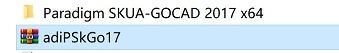
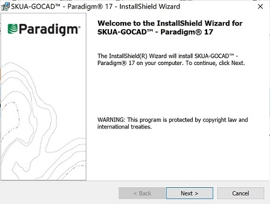
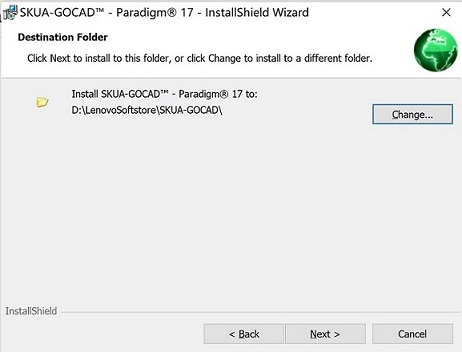
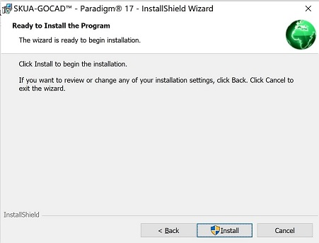
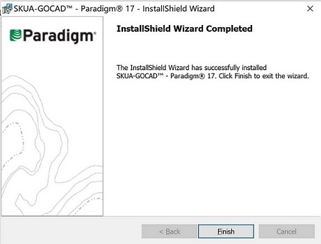
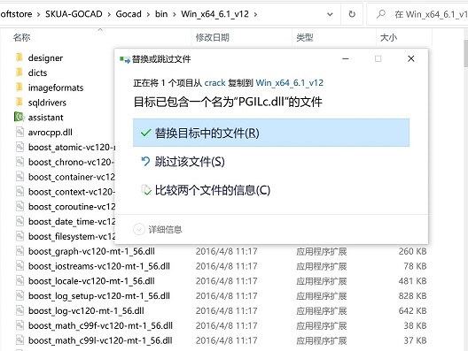
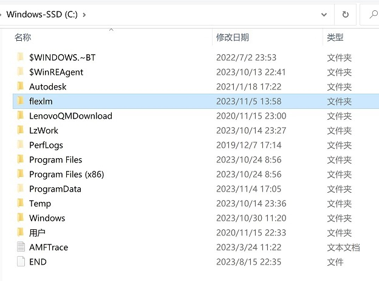
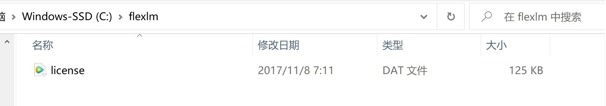
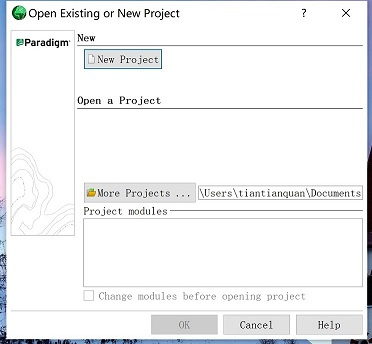
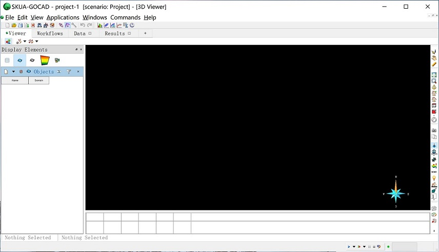

SKUA-GOCAD 17.0安装
- 下载压缩包并解压出文件夹
Paradigm SKUA-GOCAD 2017 x64，链接 百度网盘 提取码：zdem - 打开文件夹，双击运行
SKUA-GOCAD-17-Windows-x64.msi安装程序
 - 按照提示点击next，选择默认安装路径为
C:\Program Files\Paradigm\SKUA-GOCAD-17，根据提示点击next
 - 根据提示点击install
 - 安装完成后点Finish
 - 破解。打开
Crack文件夹,将其中的PGILc.dll文件复制到软件安装路径默认为C:\Program Files\Paradigm\SKUA-GOCAD-17\Gocad\bin\Win_x64_6.1_v12中覆盖源文件
 - 在C盘根目录下新建flexlm文件夹。
 - 将Crack中的license.dat文件复制到C:\flexlm中，如下图所示
 - SKUA-GOCAD 17.0软件安装完成，双击桌面图标打开软件
- 点击New Project新建项目,自定义项目名称
 - 点击Select All加载所有模块

- 开始使用。

致谢： 朱素芹（GoCAD）